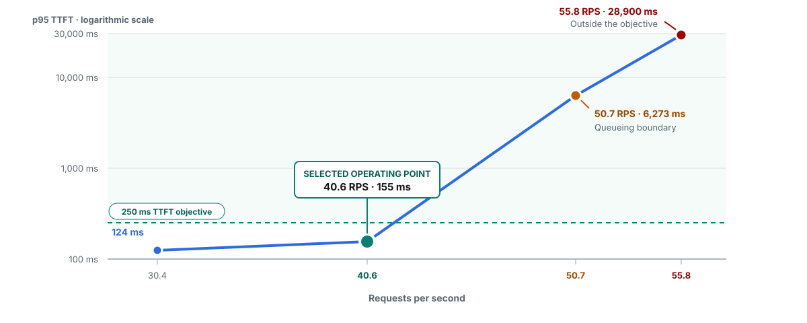
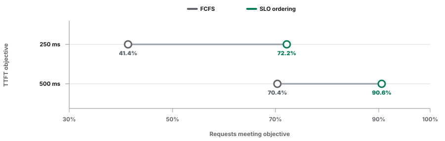

From latency objectives
to configuration.
The Red Hat AI Inference 3.5 campaign tested capacity limits, queue ordering, prefill/decode admission, and Batch controls. Start with the latency objective, then compare the controls under the workload that the service must support.
All evidence sections · Full campaign and tested builds · Example YAMLs
GPT-OSS 20B, H100 GPUs, prefix caching off. Primary tests used a pinned OpenDataHub router build; P/D used a stage-aware build, and eviction used an experimental build. Results apply to those test configurations.
Select operating load from the latency objective
Measure the request rate that meets the latency objective before choosing admission limits.

Capacity evidence · Request-cap comparison · Tested configuration
Prioritize requests with earlier latency deadlines
Deadline ordering improved target attainment within one flow; requests without an objective waited longer.

Comparison and request outcomes · Tested configuration · Replay commands
Keep prefill/decode workloads progressing
Hybrid admission detected both large-prompt and long-generation pressure. Separate fairness identities kept the tested equal-priority workloads progressing.
| Control | Tested configuration | Purpose |
|---|---|---|
| Stage-aware admission | concurrencyMode: hybridmaxConcurrency: 64maxTokenConcurrency: 80000 | Measure request and token pressure at both stages. |
| Equal-priority fairness | Separate fairness IDs and round-robin fairness | Give independent workloads dispatch turns during contention. |
| Priority holdback | Priorities 100 and 0; tested ceilings 1.00 and 0.75 | Pause standard dispatch earlier when both priorities compete for capacity. |
One prefill pod and one decode pod, each using one H100 on the same node. Accepted equal-priority runs had no 60-second starvation interval and completed all requests. This does not guarantee lower-priority progress under unlimited higher-priority demand.
P/D evidence · Endpoint Picker recipe · Deployment YAML · Replay commands
Control when Batch enters serving
Dispatch based on serving metrics met the realtime latency target more often than either direct-dispatch method.
| Batch dispatch | Blocks meeting target | Median Batch drain |
|---|---|---|
| Direct, fixed concurrency | 0 of 3 | 212 s |
| Direct, concurrency adjusted after HTTP 429 | 1 of 3 | 287 s |
| Queued, dispatch adjusted from serving metrics | 2 of 3 | 234 s |
Each method ran once in each of three counterbalanced blocks. A pass means realtime p95 TTFT ≤250 ms during the surge. All planned Batch requests completed. Two passes out of three do not establish consistent target attainment.
Dispatch methods and evidence · Shared-pool starting configuration
Recover capacity from retryable Batch work
Eviction reduced realtime errors in the tested runs and increased Batch completion time.
| Capacity held for higher-priority work | Realtime non-200 responses: eviction off / on | Change in Batch p95 completion time |
|---|---|---|
| 25% | 15 / 0 | +18.7% |
| 50% | 11 / 0 | +9.4% |
Experimental router build; 12 matched eviction-off/on pairs at each reserve level. Every Batch job completed exactly once. The rerun did not establish a consistent improvement in successful-response p95 TTFT. Cancellation and retry require an explicit owner and completion-time budget.
Configure and reproduce
- Getting-started YAMLs provide configuration patterns to calibrate for another deployment.
- Benchmark reproduction YAMLs record the tested settings and pinned builds.
- Traffic runners explain where GuideLLM was used, where specialized code was needed, and which replay paths are available.
- All 12 evidence groups include the remaining priority-policy, cost-metadata, soft provisioned-throughput, production, routing, and stability results.
Replay on a compatible deployment and compare repeated latency, throughput, errors, and workload progress. A published result does not establish the operating limits for a different model or topology.